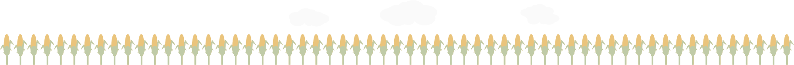

In industrial conditions, these bags compost in 6 months and get back to the soil, ready to 'grow' more bags.
(This bar to the right.)
Maybe a snack for your dog in a compostable bag…
A compostable bag, on the other hand, automatically degrades (unless it is buried so deep it gets no oxygen).
The outside of this package is probably made of paper. Ideally this is recycled or part of a sustainable planting cycle. Either way, trees contribute to your packaging.
But paper is not ideal for keeping food fresh, so bioplastics are used to line the interior. These are made from sources that will easily break down when the bag is composted…
Sources like potatoes…
Or corn...
Both of these are durable, fast growing, plentiful — and have been around for thousands of years (in a good way).
Let’s leave that to run through some cycles of composting, growing, manufacturing, purchase, consumption and back to the earth…
We may need this space…

All sorts of helpful, useful things are made using plastics — like the bins that collect compost.
Not when we have bioplastics that can be returned to the earth and continue a cycle…
Those fish are then caught through commercial fishing…
It's not just the ocean. Microplastics are also found in birds, who pick them up and feed them to their young.
Perhaps now is a good time to add some temporal context to the seemingly endless band below.
Here's the current worldwide expected human lifespan (about 72 years).
Or 600 of those bag composting cycles.
BUT…
Meanwhile, Methuselah, the oldest known living tree in the world, is almost 10 timelines old and sits in the White Mountains of California.
And Jaya Sri Maha Bodhi, a sapling from the tree under which Buddha attained enlightenment, is over 4.5 timelines old and going strong in Sri Lanka. It’s the oldest tree with a known human-planting date.
So it’s entirely possible that the resilience of nature and the ingenuity of humanity can combine to help us all endure.
Or how we package it.